MST
算法概要
模板 LOJ #123. 最小生成树
給 \(n\) 點 \(m\) 邊帶權無向連通圖，求最小生成樹的邊權和
\(n\le 2\times 10^5,m\le 5\times 10^5\)
對於每個 node 周圍最小 edge 一定會再 MST 內
如果這個點旁邊最小邊 \(e_{\text{min}}\) 沒選，把最小邊加到 MST 上面，會產生一個環
把這個環上面最大的邊 \(e_{\text{max}}\) 移除，可以得到一個新的生成樹，新的生成樹的權重比剛剛的 MST 小，這樣產生矛盾，故對於每個 node 周圍最小 edge 一定會再 MST 內
Kruskal
每次選 整張圖 最小權的邊
code
bool cmp ( Edge a , Edge b ) {
return a . w < b . w ;
}
long long Kruskal () {
sort ( edges . begin (), edges . end (), cmp );
long long ans = 0 ;
for ( int i = 0 ; i < m ; i ++ ) {
Edge e = edges [ i ];
if ( find ( e . u ) != find ( e . v )) {
merge ( e . u , e . v );
ans += e . w ;
}
}
return ans ;
}
Prim
去選從起點 擴張出來的集合周圍的 最小邊
code
void prim ( int start ) {
vector < int > dis ( n , INF );
priority_queue < pii , vector < pii > , greater < pii >> pq ;
pq . push ({ 0 , start });
while ( pq . size ()) {
auto [ d , u ] = pq . top ();
pq . pop ();
if ( dis [ u ] != INF ) continue ;
dis [ u ] = d ;
for ( auto [ v , w ] : G [ u ]) {
pq . push ({ w , v }); // 這行跟 dijkstra 不同
}
}
}
Boruvka
對於目前選到 的每個集合，選他周圍的 最小邊。對於這種邊數很多，但是很多邊用不到的東西，Boruvka 比較容易快速省略掉不需要的邊（只找需要的出來）。實作上每次對於每個連通塊選延伸出去最小的邊，然後縮點，這樣每次點的數量都至少會少一半，所以只需要 \(\log n\) 輪，每次 \(O(m)\) ，複雜度 \(O(m\log n)\) 。
pseudocode
code
#include <bits/stdc++.h>
#define int long long
using namespace std ;
using Graph = vector < vector < int >> ;
struct DSU {
int cc ;
vector < int > par , sz ;
vector < set < int >> S ;
DSU ( int n = 0 ) : cc ( n ), par ( n ), sz ( n , 1 ), S ( n ) {
for ( int i = 0 ; i < n ; i ++ ) {
par [ i ] = i ;
}
}
int find ( int x ) {
if ( par [ x ] == x ) return x ;
return par [ x ] = find ( par [ x ]);
}
bool merge ( int u , int v ) {
u = find ( u ), v = find ( v );
if ( u == v ) return false ;
if ( sz [ u ] < sz [ v ]) swap ( u , v );
par [ v ] = u ;
sz [ u ] += sz [ v ];
for ( int x : S [ v ]) {
S [ u ]. insert ( x );
}
S [ v ]. clear ();
cc -- ;
return true ;
}
};
struct Edge {
int u , v ;
int cost ;
};
bool operator < ( const Edge & a , const Edge & b ) {
return a . cost < b . cost ;
}
const int INF = 2e18 ;
int MST ( int n , vector < Edge > edges ) {
int m = edges . size ();
DSU dsu ( n );
vector < Edge > nei ( n );
int mst_ans = 0 ;
int conti = true ;
while ( conti ) {
conti = false ;
fill ( nei . begin (), nei . end (), Edge { -1 , -1 , INF });
for ( auto [ u , v , cost ] : edges ) {
int fu = dsu . find ( u ), fv = dsu . find ( v );
if ( fu == fv ) continue ;
nei [ fu ] = min ( nei [ fu ], { u , v , cost });
nei [ fv ] = min ( nei [ fv ], { v , u , cost });
}
for ( int i = 0 ; i < n ; i ++ ) {
auto e = nei [ i ];
if ( e . u == -1 ) continue ;
if ( dsu . find ( e . u ) != dsu . find ( e . v )) {
dsu . merge ( e . u , e . v );
mst_ans += e . cost ;
conti = true ;
}
}
}
return mst_ans ;
}
signed main () {
int n , m ;
cin >> n >> m ;
vector < Edge > edges ;
int u , v , w ;
for ( int i = 0 ; i < m ; i ++ ) {
cin >> u >> v >> w ;
u -- , v -- ;
edges . push_back ({ u , v , w });
}
cout << MST ( n , edges ) << " \n " ;
}
2020 花中一模 E. 道路建設 (Road) 給 \(n\) 個點，點有權值 \(a_i\) ，\(i,j\) 加邊的花費為 \(a_i+a_j\) 。另外給 \(m\) 條特殊邊 \((u, v, w)\) ，表示對 \(u,v\) 加邊，花費只能 為 \(w\) ，而非 \(a_u+a_v\) 。問這些點連起來形成樹的最小花費
\(n,m\le 10^5,a_i,w\le 10^{7}\)
思路
我們利用 borovka 的想法，每次對連通塊選「非特殊邊」之中的最小邊，放進去一個 vector，直到整張圖做完，或做不下去
至於怎麼用 borovka 選邊，我們先看當前連通塊 \(a_i\) 最小的點是否可以連項不同連通塊的 \(a_j\) ，\(a_j\) 滿足 \((i,j)\) 非特殊邊的 \(j\) 之中最小的。若都沒辦法的話，那就要從小到大枚舉連通塊內的 \(a_i\) ，和不在連通塊的 \(a_j\) ，滿足 \((i,j)\) 非特殊邊的 \(j\) 之中最小的，無法連接的情況最多只會有 \(m\) 次（\(m\) 條特殊邊），所以複雜度是合理的
最後用 Kruskal 在特殊邊和剛剛用 borovka 選的邊上選 MST
Borovka 每次執行會有二分搜 \(O(n\log n)\) ，共有 \(O(\log n)\) 輪，複雜度 \(O(n\log^2 n)\) ，Kruskal 因為 Borovka 只會挑出 \(n - 1\) 條邊，所以，複雜度還是 \(O(n\log n)\) ，所以共 \(O(n\log^2 n)\)
實作上詳見代碼
code
#include <algorithm>
#include <array>
#include <iostream>
#include <set>
#include <utility>
#include <vector>
using namespace std ;
using Edge = array < int , 3 > ;
const int INF = 1e9 + 7 ;
struct DSU {
int cc ;
vector < int > par , sz ;
vector < set < int >> S ;
DSU ( int n = 0 ) : cc ( n ), par ( n ), sz ( n , 1 ), S ( n ) {
for ( int i = 0 ; i < n ; i ++ ) {
par [ i ] = i ;
}
}
int find ( int x ) {
if ( par [ x ] == x ) return x ;
return par [ x ] = find ( par [ x ]);
}
bool join ( int u , int v ) {
u = find ( u ), v = find ( v );
if ( u == v ) return false ;
if ( sz [ u ] < sz [ v ]) swap ( u , v );
par [ v ] = u ;
sz [ u ] += sz [ v ];
for ( int x : S [ v ]) {
S [ u ]. insert ( x );
}
S [ v ]. clear ();
cc -- ;
return true ;
}
};
int n , m ;
vector < int > a , rk ;
vector < vector < int >> G ;
vector < Edge > edges ;
DSU dsu ;
void init () {
cin >> n >> m ;
a = rk = vector < int > ( n );
vector < pair < int , int >> tmp ( n );
G = vector < vector < int >> ( n );
dsu = DSU ( n );
for ( int i = 0 ; i < n ; i ++ ) dsu . S [ i ] = { i };
for ( int i = 0 ; i < n ; i ++ ) {
cin >> a [ i ];
tmp [ i ] = { a [ i ], i };
}
sort ( tmp . begin (), tmp . end ());
for ( int i = 0 ; i < n ; i ++ ) {
rk [ tmp [ i ]. second ] = i ;
}
sort ( a . begin (), a . end ());
for ( int i = 0 ; i < m ; i ++ ) {
int u , v , w ;
cin >> u >> v >> w ;
u = rk [ u - 1 ], v = rk [ v - 1 ];
edges . push_back ({ w , u , v });
G [ u ]. push_back ( v );
G [ v ]. push_back ( u );
}
for ( int i = 0 ; i < n ; i ++ ) {
sort ( G [ i ]. begin (), G [ i ]. end ());
}
}
inline bool contain ( const vector < int > & vec , int x ) {
return binary_search ( vec . begin (), vec . end (), x );
}
void collect_edges () {
bool conti = true ;
while ( conti ) {
conti = false ;
for ( int root = 0 ; root < n ; root ++ ) {
if ( dsu . find ( root ) != root ) continue ;
const set < int > & S = dsu . S [ root ];
vector < int > C ; // 一些不在 S 東西
Edge best_edge = { INF , -1 , -1 };
int x = * S . begin ();
for ( int i = 0 ; i < n ; i ++ ) {
if ( dsu . find ( i ) == dsu . find ( x )) continue ;
if ( contain ( G [ x ], i ) == false ) {
best_edge = { a [ x ] + a [ i ], x , i };
break ;
} else {
C . push_back ( i );
}
}
for ( int u : S ) {
for ( int v : C ) {
if ( contain ( G [ u ], v ) == false ) {
best_edge = min ( best_edge , Edge { a [ u ] + a [ v ], u , v });
break ;
}
}
}
if ( best_edge [ 0 ] != INF ) {
conti = true ;
int u = best_edge [ 1 ];
int v = best_edge [ 2 ];
dsu . join ( u , v );
edges . push_back ( best_edge );
}
}
}
}
void mst () {
sort ( edges . begin (), edges . end ());
dsu = DSU ( n );
long long ans = 0 ;
for ( auto e : edges ) {
int w = e [ 0 ];
int u = e [ 1 ];
int v = e [ 2 ];
if ( dsu . find ( u ) != dsu . find ( v )) {
dsu . join ( u , v );
ans += w ;
}
}
cout << ans << '\n' ;
}
int main () {
cin . tie ( 0 );
cin . sync_with_stdio ( 0 );
init ();
collect_edges ();
mst ();
return 0 ;
}
CF 888 G. Xor-MST 給 \(n\) 點無向完全圖，每個點有權值 \(a_i\) ，\((i,j)\) 連邊花費 \(a_i\oplus a_j\) ，問最小生成樹邊權總和
\(n\le 2\times 10^5,a_i< 2^{30}\)
思路
考慮 borovka，要怎麼快速找到 \(a_i \oplus a_j\) 呢 ? 0-1 字典樹
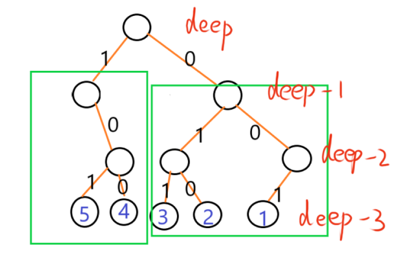
我們將 0-1 字典樹畫出來，會觀察到我們要對於每層的每個節點分治算答案
如圖，也就是說要去兩個連通塊分別找最小的 \(a_i,a_j\)
參考 : CSDN
CF 1550 F. Jumping Around 給數線上 \(n\) 個點 \(a_1,\ldots, a_n\) ，和 \(d\) ，起點為 \(a_s\) ，\(q\) 筆詢問 ：
給 \(x, k\) ，每步可以從當前的位置跳到值域在 \([d-k, d+k]\) 內的 \(a_i\) ，問能否從 \(a_s\) 抵達 \(a_x\)
\(n,q \le 2\times 10^5,k,a_i \le 10^6\)
思路
問題可以轉換成 : 建立完全圖，每邊的邊權定為 \(|w-d|\) ，對每個 query 回答 \(s\to x\) 的邊上的最大值是否 \(\le k\)
以下提到的「距離」為兩點之間的邊權
「距離」越小代表在原圖上兩點之間的邊權越接近 \(d\)
對於每個點要去找當前不同連通塊且距離最小的點，我們可以把這個看作是一個詢問，存成 tuple(\(a_i, a_i + d,\) 所屬的連通塊)
我們現在來一起處理每個點丟出來的 tuple。我們可以從左到右掃過去，維護當前最後兩個不同連通塊的點（必免到時候找到在相同連通塊的點）。當我們碰到一個 tuple 的 \(a_i+d\) 時，我們就可以從這兩個 tuple 挑一個出來，將答案 \(\min\) 進去所屬的連通塊
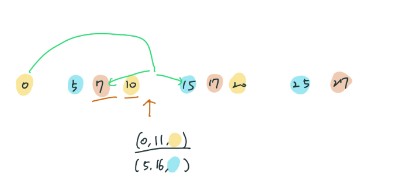
\(d=11,\) 已經做好第一輪 Borovka
習題
CF 1468 J. Road Reform 給 \(n\) 點 \(m\) 邊無向圖，選出一棵生成樹，可以對樹上的邊權值 \(+1\) 或 \(-1\)
使樹上邊權最大值恰為 \(k\) ，求最小操作次數
\(n,m\le 2\times 10^5,k\le 10^9\)
思路
分情況討論：
(一) 只用小於 \(k\) 的邊即可連通所有點
(二) 只用小於 \(k\) 的邊不可連通所有點
額外再選一些邊，\(\text{cost}=\sum (w-k)\)
參考 : CSDN
CF 1095 F. Make It Connected 給定 \(n\) 個點，點有權值 \(a_i\) ，\(i,j\) 加邊的花費為 \(a_i+a_j\)
另外給 \(m\) 條特殊邊 : 表示對 \(u,v\) 加邊，花費也可以為 \(w\)
要求將這些點連起來形成樹的最小花費代價
\(n,m\le 2\times 10^5,a_i,w\le 10^{12}\)
思路
我們真的需要 \(n^2\) 枚舉 \(a_i+a_j\) 嗎 ?
先將 \(a_i\) 小到大 sort，依據 Prim 的想法，假設我們一開始在 \(a_1\) ，我們會去找 \(a_i\) 不在連通塊裡最小的那個，用連通塊裡 \(a_i\) 最小的跟他連邊，也就是 \(a_1\leftrightarrow a_2\) ，接下來會找到 \(a_3\) ，\(a_1\leftrightarrow a_3\) ，接著 \(a_1\leftrightarrow a_4\ldots\)
也就是我們只需考慮 \(a_1\) ，連接到所有點即可，然後在跟特殊邊一起丟進 Kruskal 跑 MST
code
#include <bits/stdc++.h>
#define int long long
using namespace std ;
int n , m , arr [ 1000000 ], pal [ 1000000 ];
struct edge {
int u , v , w ;
};
int find ( int u ){
if ( pal [ u ] == u ) return u ;
pal [ u ] = find ( pal [ u ]);
return pal [ u ];
}
int cmp ( edge a , edge b ){
return a . w < b . w ;
}
signed main (){
ios :: sync_with_stdio ( 0 );
cin . tie ( 0 );
cin >> n >> m ;
int mi = 1e13 , idx ;
for ( int i = 1 ; i <= n ; i ++ ){
cin >> arr [ i ];
if ( arr [ i ] < mi ){
mi = arr [ i ], idx = i ;
}
}
vector < edge > G ;
for ( int i = 1 , u , v , w ; i <= m ; i ++ ){
cin >> u >> v >> w ;
G . push_back ({ u , v , w });
}
for ( int i = 1 ; i <= n ; i ++ ){
G . push_back ({ idx , i , arr [ idx ] + arr [ i ]});
}
for ( int i = 1 ; i <= n ; i ++ ) pal [ i ] = i ;
sort ( G . begin (), G . end (), cmp );
int ans = 0 ;
for ( auto [ u , v , w ] : G ){
int x = find ( u );
int y = find ( v );
if ( x == y ) continue ;
else {
pal [ x ] = y ;
ans += w ;
}
}
cout << ans << " \n " ;
}
Atcode abc282 E. Choose Two and Eat One 一個盒子中有 \(N\) 個球，每個球上寫著一個介於 \(1\) 和 \(M-1\) 之間的數字。對於 \(i=1,2,...,N\) ，第 \(i\) 個球上寫著數字 \(A_i\) 。
當盒子中剩下兩個或更多球時，重複以下步驟：
最後，任意選擇其中一個球吃掉，將另一個球放回盒子。
輸出可能獲得的最大總得分。
\(N\le 500,M\le 10^9\)
思路
題目轉換成 : 邊權為 \((x^y + y^x) \pmod{M}\) ，問 MST
因為「選擇其中一個球吃掉」就有點像你確定了 MST 的 leaf，然後把這個 leaf 移除，然後把它移除，然後子問題
使用 Prim 算法 n2 求解
歐幾里得最小生成樹 TIOJ 2164. 運送蛋餅
給 \(n\) 個三維座標點，\(i,j\) 連邊的花費為 \((x_i-x_j)^ 2 + (y_i-y_j)^ 2 + (z_i-z_j)^ 2\) ，求最小生成樹權值
\(n\le 5000,|x_i|, |y_i|, |z_i| \leq 10^ 5\)
思路
Prim n2 算法
CF 1245 D. Shichikuji and Power Grid 在一個二維平面上面，有 \(n\) 個城市，現在每個城市都沒有電
有兩種方案 :
現在問你最少花費多少代價，能夠使得全部城市都有電，輸出方案
\(n\le 2000,x_i,y_i\le 10^6,c_i,k_i\le 10^9\)
思路
建立超級源點連接每個點，邊權為 \(c_i\) ，共 \(n+1\) 個點做 MST
Atcoder abc270 F. Transportation 有 \(n\) 個島嶼，序列 \(X, Y\) ，和 \(m\) 條建邊的方案 \((u, v, w)\) ，每次可以建立以下三種道路
求最小花費使得所有島嶼跟島嶼連通
\(n,m\le 2\times 10^5,X_i,Y_i,w_i\le 10^9\)
思路
建立兩個超級源點，連接每個點，代表蓋港口或機場
只是我們不一定會蓋港口或機場，所以分 4 個 case
Kruskal(橋)
Kruskal(橋 + 港口)
Kruskal(橋 + 機場)
Kruskal(橋 + 港口 + 機場)
code
??? note "code"
``` cpp linenums = "1"
#include <bits/stdc++.h>
#define int long long
#define x first
#define y second
#define PII pair <int, int>
#define endl '\n'
const int INF = 1e18 ;
using namespace std ;
const int N = 200005 ;
struct Edge {
int u , v , w ;
} e [ N ], g [ N * 3 ];
int q [ N ], x [ N ], y [ N ];
bool cmp ( Edge a , Edge b ) {
return a . w < b . w ;
}
int find ( int x ) {
if ( x != q [ x ]) q [ x ] = find ( q [ x ]);
return q [ x ];
}
int Kruskal ( int n , int m ) {
sort ( g + 1 , g + m + 1 , cmp );
for ( int i = 1 ; i <= n ; i ++ ) q [ i ] = i ;
int res = 0 ;
int cnt = 0 ;
for ( int i = 1 ; i <= m ; i ++ ) {
auto [ u , v , w ] = g [ i ];
int fu = find ( u ), fv = find ( v );
if ( fu != fv ) {
q [ fu ] = fv ;
res += w ;
cnt ++ ;
}
}
if ( cnt == n - 1 ) return res ;
else return INF ;
}
void solve () {
int n , m ;
cin >> n >> m ;
int res = 1e18 ;
for ( int i = 1 ; i <= n ; i ++ ) {
cin >> x [ i ];
}
for ( int i = 1 ; i <= n ; i ++ ) {
cin >> y [ i ];
}
for ( int i = 1 ; i <= m ; i ++ ) {
int u , v , w ;
cin >> u >> v >> w ;
e [ i ] = { u , v , w };
}
for ( int i = 1 ; i <= m ; i ++ ) {
g [ i ] = e [ i ];
}
res = min ( res , Kruskal ( n , m ));
//飞机
for ( int i = 1 ; i <= m ; i ++ ) {
g [ i ] = e [ i ];
}
for ( int i = 1 ; i <= n ; i ++ ) {
g [ i + m ] = { i , n + 1 , x [ i ]};
}
res = min ( res , Kruskal ( n + 1 , m + n ));
//海
for ( int i = 1 ; i <= m ; i ++ ) {
g [ i ] = e [ i ];
}
for ( int i = 1 ; i <= n ; i ++ ) {
g [ i + m ] = { i , n + 1 , y [ i ]};
}
res = min ( res , Kruskal ( n + 1 , m + n ));
//飞机和海
for ( int i = 1 ; i <= m ; i ++ ) {
g [ i ] = e [ i ];
}
for ( int i = 1 ; i <= n ; i ++ ) {
g [ i + m ] = { i , n + 1 , x [ i ]};
}
for ( int i = 1 ; i <= n ; i ++ ) {
g [ i + n + m ] = { i , n + 2 , y [ i ]};
}
res = min ( res , Kruskal ( n + 2 , m + n + n ));
cout << res ;
}
signed main (){
ios :: sync_with_stdio ( false );
cin . tie ( nullptr );
int t ; t = 1 ;
//cin >> t;
while ( t -- ) {
solve ();
}
return 0 ;
}
K 度限制生成樹 CF 125 E. MST Company
給 \(n\) 點 \(m\) 邊連通圖，找最小生成樹滿足與點 \(1\) 的度數要恰為 \(k\) ，印出樹上的邊，或無解
\(n,k\le 5000,m\le 10^5,w_i\le 10^5\)
思路
見 Aliens 優化
LeetCode 1579. Remove Max Number of Edges to Keep Graph Fully Traversable 給一張 \(n\) 個點 \(m\) 邊無向圖，邊有三種 type ：
Alice 的邊
Bob 的邊
Alice 跟 Bob 的邊
最多可以移除多少條邊使得分別對於 Bob 跟 Alice 圖都還是連通的
\(n,m \le 10^5\)
思路
刪掉的邊其實就是 Kruskal 內發現兩邊已在同一個連通塊的情況
因為沒有邊權，依 Kruskal 的正確性，邊的順序是不重要的。顯然我們共用邊要比只有一個人的邊還更不容易被刪掉，因為刪掉他的話會影響 Alice 跟 Bob 兩人的貢獻
我們先跑 Kruskal(共用邊)，先把共用邊選起來這樣等等就不會被刪掉
然後再接著跑 Alice，Bob，這時候若發現是在同一個連通塊時會刪掉的就是 only Alice 或 only Bob 的邊，不會是共用邊
code
前往 LeetCode solution
USACO Open 2021 Gold P2.Portals 有一個由 \(N\) 個編號為 \(1\dots N\) 的結點以及 \(2N\) 個編號為 \(1\cdots 2N\) 的結構。每個傳送門連接兩個不同的結點 \(u\) 和 \(v\) （\(u≠v\) ）。可能有多個傳送門連接同一對結點。
每個點與四個不同的傳送門相連，與 \(v\) 相連的傳送門是 \(p_v=[p_{v,1},p_{v,2},p_{v,3},p_{v,4}]\)
當前的位置可用 pair\((v,p_{v,i})\) 表示，可用以下操作改變位置：
由穿過當前傳送門來改變當前結點
\((v,p_{v,2})\) 跟 \((v,p_{v,1})\) 之間有雙向邊，\((v,p_{v,3})\) 跟 \((v,p_{v,4})\) 之間有雙向邊
對於每個點，可以花費 \(c_v\) ，重新排列 \(v\) 的 \(p_v=[p_{v,1},p_{v,2},p_{v,3},p_{v,4}]\) ，目標使這 \(4N\) 個點連通，求最小花費
\(2\le N \le 10^5,\le c_v\le 10^3\)
思路
依照題目的二為座標點的意義，我們將圖畫出來
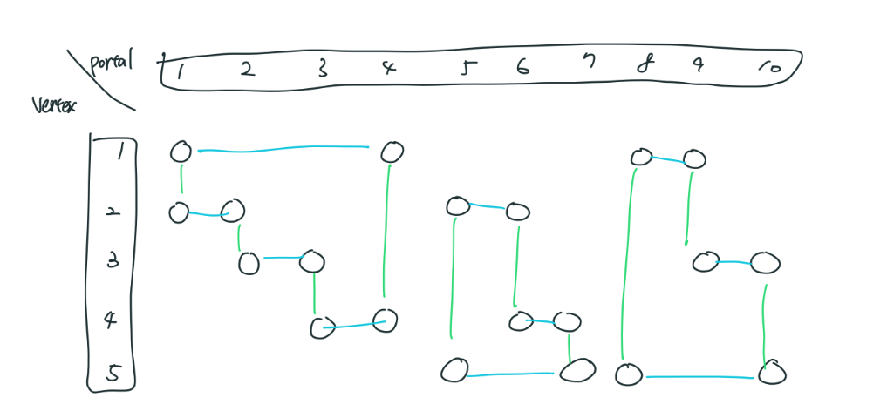
每個點的 degree 都只有 2，所以會形成很多 cycle
再觀察花費 \(c_v\) 重新排列的意義
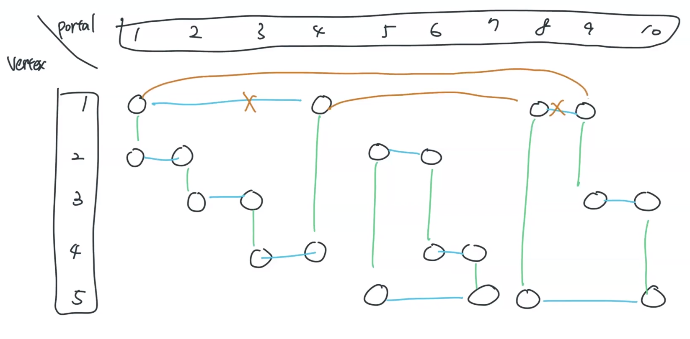
花費 \(c_v\) 可以將兩個 cycle 接起來，而 \(p_{v,1},p_{v,2}\) 再同一個 cycle， \(p_{v,3},p_{v,4}\) 再同一個 cycle，所以我們可以建邊 \(p_{v,1}\leftrightarrow p_{v,3}\) 權重為 \(c_v\)
其他預設好的邊權重都為 \(0\) ，下去跑 MST 即可
每個點的 degree 只有 2，所以邊最多也就 \(2n\) 個，複雜度 ok
CF 196 E.Opening Portals 給一張 \(n\) 點 \(m\) 邊的連通圖，其中有 \(k\) 個點是特殊點。一開始在編號 \(1\) 的點，在一個特殊點上時，你可以傳送到任意一個走過的特殊點，問走過所有特殊點的最小的距離總和
\(n,m,k\le 10^5\)
思路
首先先利用多源點 dijkstra 跑出與每個點最近的特殊點 \(p_i\) ，與跟這個特殊點的距離 \(d_i\) 。再來枚舉重疊邊，代表特殊點兩兩之間的權重，最後跑 Kruskal，答案記得加起始點 \(1\) 與最近的特殊點的距離
LOJ #3696. 「JOISC 2022 Day4」复兴计划 給一張 \(n\) 點 \(m\) 邊帶權無向圖，有 \(q\) 個詢問 :
給 \(x\) ，此時圖上的邊權定為 \(|x-w|\) ，求最小生成樹
\(n\le 500,m\le 10^5,q\le 10^6,x,w,\le 10^9\)
思路
引理 : \(\texttt{MST}(\texttt{MST}(E_1) \cup \texttt{MST}(E_2))= \texttt{MST}(E_1 \cup E_2)\)
我們先將邊權 \(w\) 從小到大排序
將每個 prefix 跟 suffix 都建立 MST，建立的方法是
pre[i - 1] 做完 MST 只有挑 n - 1 個邊，將 i 這條邊加進去重做一次 Kruskal，即得到 n - 1 條邊的 pre[i]，以此類推，suffix 也一樣
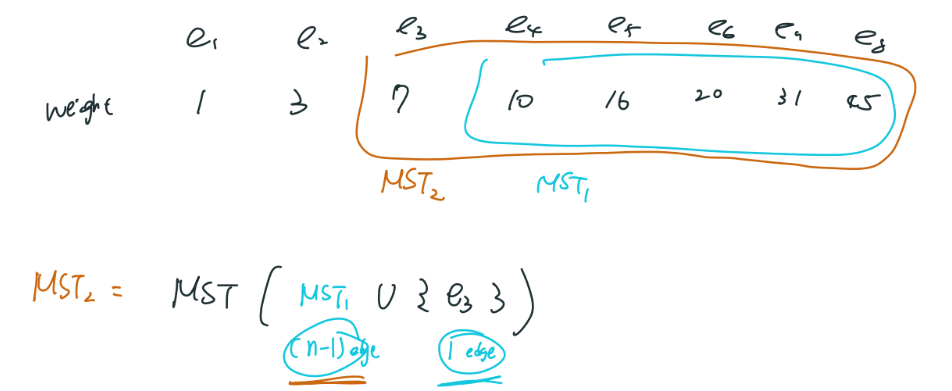
因為具有單調性，故 Kruskal 並不需要重新排序，是 \(O(n\times \log^* n)\)
雖然 \(q\) 到 \(10^6\) ，但實際能差入的縫只有 \(m\) 個，所以我們先將每個縫左邊的 prefix，右邊的 suffix 一起再 Kruskal 一次，兩邊都知道自己要出動哪一些邊，就可以 \(O(1)\) 回答查詢
複雜度為 \(O(m\times n \log^* n)\) ，差不多 \(10^5\times 500\times 4\times 2=4\times 10^8\)
最優比率樹 POJ 2728
給出一個 \(n\) 個點 \(m\) 條邊的無向圖，第 \(i\) 條邊有兩個權值 \(a_i\) 和 \(b_i\) 。
求該圖的一棵生成樹 \(T\) ，使得以下的 \(\text{cost}\) 最小
\[\text{cost}=\cfrac{\sum \limits_{e\in T}a_e}{\sum \limits_{e\in T}b_e}\]
\(n\le 1000\)
思路
考慮 0-1 分數規劃
令 \(\cfrac{\sum a}{\sum b}=t\) ，那麼 \(\sum a = t\times \sum b\) ，令 \(f(t) = \sum(a - t\times b)\)
在最優解的時候 \(f(t)\) 恰為 \(0\)
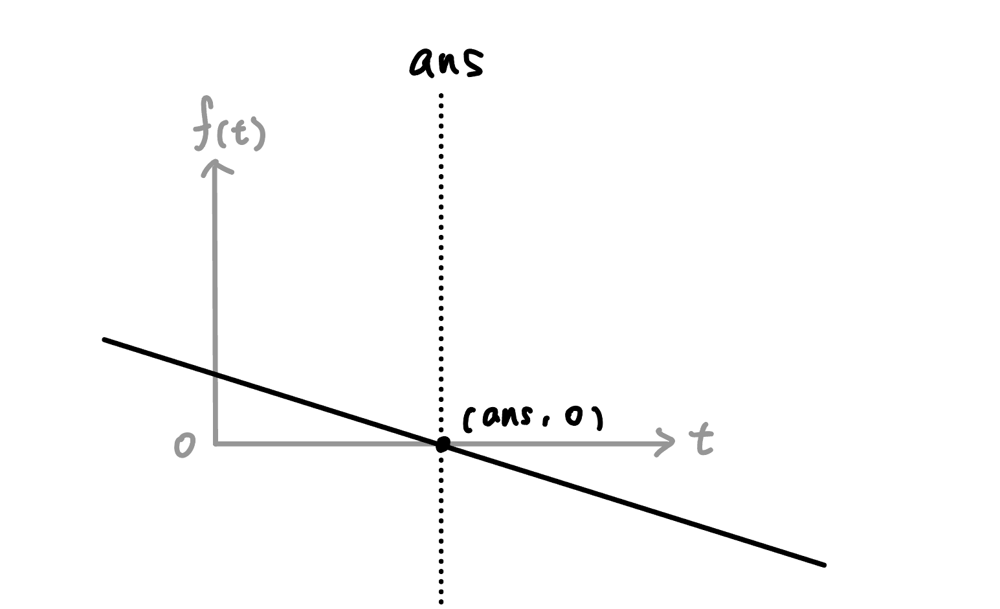
TIOJ 1795. 咕嚕咕嚕呱啦呱啦 給一張 \(n\) 點 \(m\) 邊無向圖，邊權非 \(0\) 即 \(1\) ，問是否存在一個生成樹邊權總合為 \(k\)
\(n\le 10^5,m\le 3\times 10^5\)
思路
先算最大 MST 的花費，最小 MST 的花費，看 \(k\) 是否介於兩者的花費之間
洛谷 P3623 [APIO2008] 免费道路 給一張 \(n\) 點 \(m\) 邊無向圖，邊權非 \(0\) 即 \(1\) ，問是否存在一個生成樹邊權總合為 \(k\) ，輸出任意組解 或是輸出無解
\(n\le 2\times 10^5,m\le 10^5\)
思路
跟上面 TIOJ 1795 一樣，我們要判斷有沒有解就看 \(k\) 是否介於最小與最大 MST 之間，如果 MST 不連通也是無解
最大 MST 的構造可以先加入所有最小 MST 有用到的邊權為 \(1\) 的邊，然後再將剩下沒選到的邊權為 \(1\) 的邊加入，這樣就不會發生有邊權為 \(1\) 的邊最大 MST 沒選到但最小 MST 有選到的情況
最後要構造權重和恰為 \(k\) 的 MST，這時我們就將最小 MST 開始枚舉自己沒用到但最大 MST 有用到的權重為 \(1\) 的邊加入，直到權重和為 \(k\) 。這時，再將邊權為 \(0\) 的邊加入直到形成 MST 為止，即完成構造
正確性的話因為最小 MST 有用到權重為 \(1\) 的邊，權重為 \(k\) 的 MST 都有用到的，而最小 MST 在這之後加入了邊權為 \(0\) 的邊可以形成 MST，權重為 \(k\) 的 MST 可能還多一些權重為 \(1\) 的邊，再加入 \(0\) 的邊也一定會形成 MST
Atcoder arc076 B.Built? 給 \(n\) 個二維座標點 \((x_i, y_i)\) ，兩點要建邊的 \(\text{cost} = \min(|x_i - x_j|, |y_i - y_j|)\) ，求最小生成樹權值
\(n\le 10^5, x_i, y_i \le 10^9\)
思路
每個點跟周圍（\(x_i\) 排序後的左右兩個點，\(y_i\) 排序後的左右兩個點）連邊
跑個 Kruskal
補圖技巧
給一張完全圖，給 \(m\) 補邊，代表除了這 \(m\) 條邊外，其他 \((u,v)\) 之間都有邊
實作上維護一個還沒分到組的 set，分到組時把他從 set 刪掉
code
void dfs ( int u ) {
vis [ u ] = 1 ;
vector < int > ret ;
for ( int v : all ) { // 沒出現 -> 有邊
if ( ! G [ u ]. count ( v ) && ! vis [ v ]) ret . push_back ( v );
}
for ( int ele : ret ) { // 已分到組
all . erase ( ele );
}
for ( int ele : ret ) {
dfs ( ele );
}
}
CF 920 E. Connected Components? 給定 \(n\) 個點的無向圖，\(m\) 條補邊(除了這 \(m\) 條邊，其餘都存在)，求每個連通塊的大小
\(n,m\le 2\times 10^5\)
思路
用一般的補圖 DFS 去看有幾個連通塊即可
code
#include <bits/stdc++.h>
#define int long long
#define pb push_back
#define pii pair<int, int>
using namespace std ;
const int maxn = 3e5 + 5 ;
const int INF = 0x3f3f3f3f ;
const int M = 1e9 + 7 ;
set < int > G [ maxn ];
set < int > all ;
int n , m , vis [ maxn ], cnt = 0 ;
int dfs ( int u ) {
vis [ u ] = 1 ;
vector < int > ret ;
for ( int v : all ) { // 沒出現 -> 有邊
if ( ! G [ u ]. count ( v ) && ! vis [ v ]) ret . push_back ( v );
}
for ( int ele : ret ) {
all . erase ( ele );
}
int sum = 1 ;
for ( int ele : ret ) {
sum += dfs ( ele );
}
return sum ;
}
signed main () {
//ios::sync_with_stdio(0);
//cin.tie(0);
cin >> n >> m ;
for ( int i = 1 ; i <= n ; i ++ )
all . insert ( i );
for ( int i = 0 , u , v ; i < m ; i ++ ) {
cin >> u >> v ;
G [ u ]. insert ( v );
G [ v ]. insert ( u );
}
vector < int > sz ;
for ( int i = 1 ; i <= n ; i ++ ) {
if ( vis [ i ] == 0 ) {
sz . pb ( dfs ( i ));
cnt ++ ;
}
}
sort ( sz . begin (), sz . end ());
cout << cnt << " \n " ;
for ( auto ele : sz ) cout << ele << " " ;
}
CF 1242 B. 0-1 MST 給 \(n\) 個點的完全圖，給 \(m\) 條邊權為 \(1\) 的邊，其餘邊權為 \(0\) ，問最小生成樹權值
\(n,m\le 10^5\)
思路
將邊權是 \(0\) 一定要先選，所以我們可以將 \(0\) 的邊選起來，會構成一些連通塊，這個可以用上一題的方法做到
然後再看還缺幾條邊
code
#include <bits/stdc++.h>
#define int long long
#define pb push_back
#define pii pair<int, int>
using namespace std ;
const int maxn = 3e5 + 5 ;
const int INF = 0x3f3f3f3f ;
const int M = 1e9 + 7 ;
set < int > G [ maxn ];
set < int > all ;
int n , m , vis [ maxn ], cnt = 0 ;
void dfs ( int u ) {
vis [ u ] = 1 ;
vector < int > ret ;
for ( int v : all ) { // 沒出現 -> 有邊
if ( ! G [ u ]. count ( v ) && ! vis [ v ]) ret . push_back ( v );
}
for ( int ele : ret ) {
all . erase ( ele );
}
for ( int ele : ret ) {
dfs ( ele );
}
}
signed main () {
//ios::sync_with_stdio(0);
//cin.tie(0);
cin >> n >> m ;
for ( int i = 1 ; i <= n ; i ++ )
all . insert ( i );
for ( int i = 0 , u , v ; i < m ; i ++ ) {
cin >> u >> v ;
G [ u ]. insert ( v );
G [ v ]. insert ( u );
}
for ( int i = 1 ; i <= n ; i ++ ) {
if ( vis [ i ] == 0 ) {
dfs ( i );
cnt ++ ;
}
}
cout << cnt - 1 ;
}
MST 的唯一性
判斷 MST 是否唯一，如果並非唯一，代表它可以被相同權重的邊給替換，\(\Rightarrow\) 對於相同的邊一起去跑
在 \(w\) 以下的邊都做好 Kruskal 後，會形成若干連通塊，而且這些來通塊各個都是樹，我們稱整張圖為最小生成森林
將 \(w\) 以下的邊以哪種順序做好 Kruskal 後會形成的最小生成森林都是一樣的
不管同一個權重 w 的邊用甚麼順序去 merge，每個點最後會被分到的連通塊都是相同的，只有每個連通塊內「用甚麼邊去將這些點接起來」有差別而已，這些邊能接起來的點集都是相同的。整體來說，不管什麼順序，將每個連通塊縮點後圖都是一模一樣的
code
void solve () {
for ( int i = 1 ; i <= n ; i ++ ) par [ i ] = i ;
sort ( E . begin (), E . end (), []( Edge a , Edge b ) { return a . w < b . w ; });
for ( int i = 0 ; i < m ;) {
int r = i ;
while ( E [ i ]. w == E [ r + 1 ]. w ) r ++ ; //[i, r]
// 這邊一般會寫題目要做的事情
for ( int j = i ; j <= r ; j ++ ) {
int x = find ( E [ j ]. u ), y = find ( E [ j ]. v );
if ( x == y ) continue ;
merge ( x , y );
}
i = r + 1 ;
}
}
CF 1108 F. MST Unification 給 \(n\) 點 \(m\) 邊無向連通圖，你可以做以下操作 :
選一條邊，對其邊權 \(+1\) ，使得圖的最小生成樹唯一
求最小操作次數
\(n,m\le 2\times 10^5\)
思路
邊會衝突若且唯若環上至少有一個邊跟我相等，所以我只要將我權值 \(+1\) 即可
\(+1\) 後不會變成更高權重的選項，因為能衝突就代表自己的邊權是環上最大的
code
#include <bits/stdc++.h>
#define int long long
#define double long double
#define x first
#define y second
#define mk make_pair
#define pb push_back
#define pii pair<long long, long long>
using namespace std ;
struct Edge {
int u , v , w ;
};
const int INF = 9e18 ;
const int maxn = 2e5 + 5 ;
const int maxm = 5e5 + 5 ;
const int lg = 20 ;
vector < Edge > E ;
vector < pii > G [ maxn ];
int n , m ;
int dsu [ maxn ], par [ maxn ];
int find ( int x ) {
if ( par [ x ] == x ) return x ;
else return par [ x ] = find ( par [ x ]);
}
void merge ( int a , int b ) {
int x = find ( a ), y = find ( b );
if ( x == y ) return ;
par [ x ] = y ;
}
void solve () {
for ( int i = 1 ; i <= n ; i ++ ) par [ i ] = i ;
sort ( E . begin (), E . end (), []( Edge a , Edge b ) { return a . w < b . w ; });
int cnt = 0 ;
for ( int i = 0 ; i < m ;) {
int r = i ;
while ( E [ i ]. w == E [ r + 1 ]. w ) r ++ ; //[i, r]
// 判斷有多少合法邊
for ( int j = i ; j <= r ; j ++ ) {
int x = find ( E [ j ]. u ), y = find ( E [ j ]. v );
if ( x == y ) continue ;
cnt ++ ;
}
// 判斷
for ( int j = i ; j <= r ; j ++ ) {
int x = find ( E [ j ]. u ), y = find ( E [ j ]. v );
if ( x == y ) continue ; // 已經被併過了, 屬於同一方案
// 再不同的集合, 唯一的方案
merge ( x , y ), cnt -- ;
}
// ans = 重複相同權重的邊 = (合法邊) - (唯一方案數) = 其實加了是重複的方案的邊
i = r + 1 ;
}
cout << cnt << " \n " ;
}
void init () {
cin >> n >> m ;
for ( int i = 0 , u , v , w ; i < m ; i ++ ) {
cin >> u >> v >> w ;
E . pb ({ u , v , w });
}
}
signed main () {
init ();
solve ();
}
CF 160 D. Edges in MST 給 \(n\) 點 \(m\) 邊無向帶權連通圖，判斷每個邊的 type
出現在所有方案中
完全沒出現在任何方案
至少出現在一種方案
\(n,m\le 10^5\)
思路
首先我們根據 Kruskal 演算法求最小生成樹 (MST) 的思路，將邊權從小到大排序。容易發現：若一條邊的兩個端點在之前就被比它邊權更小的邊所聯通，則這條邊一定不會出現在 MST 中。
根據該思路，我們對同一邊權的邊分別進行處理。首先，我們去除掉剛才說的顯然不存在的邊，然後把其他的邊加入到原圖（重邊無影響）中。那麼顯然，圖中的割邊就是一定會出現在所有 MST 中的邊。
舉個例子，假設當前處理到邊權為 \(x\) 。那麼我們先把所有小於 \(x\) 的邊加進去。根據上述思路可知，這兩個邊的集合一定不連通，否則這條邊顯然不存在。這個時候兩個集合之間可能會有若干個權值為 \(x\) 的邊，而連接這兩個集合的一定是這些權值為 \(x\) 的邊，不可能更大，這一點由 Kruskal 演算法的貪心性質可知。而此時，從這些 \(x\) 中我們只需選出一條即可，所以這些 \(x\) 至少存在於一個 MST 中，而如果只有一個 \(x\) ，則它一定是橋，則必然出現於所有 MST 中。
由於我們在考慮當前權值時，並不關心圖的其他部分，所以我們在處理一類邊權時，對當前圖進行縮點，可以做到時間的最佳化。這邊縮點的方法是採用並查集（也就是每次在看一個點的時候都先在並查集內 find(u)，詳見代碼）。縮點後找橋的過程中，我們只需要初始化所有新邊兩端點的 dfn 為 0，不必要全部初始化，因為對於其他點是沒有影響的。
複雜度的部分因為每個點被 tarjan 算法跑過一次後就會縮點起來，總時間複雜度就是 sort \(O(m\log m)\) + tarjan \(O(n + m)\) 所以是 \(O(m\log m)\) 。
code
#include <cstdio>
#include <vector>
#include <algorithm>
using std :: sort ;
int n , m , f [ 100010 ], ans [ 100010 ];
namespace graph {
using std :: min ;
using std :: vector ;
struct node {
int to , id ;
};
static int nowtime , dfn [ 100010 ], low [ 100010 ];
vector < node > e [ 100010 ];
struct node1 {
int from , to , v , id ;
bool operator < ( const node1 & a ) const {
return v < a . v ;
}
}
edge [ 100010 ];
inline void addedge ( int from , int to , int id ) { //加边
e [ from ]. push_back ( node { to , id }),
e [ to ]. push_back ( node { from , id });
}
void tarjan ( int now , int faid ) { // faid 為目前轉移到 now 這個點的邊的編號
low [ now ] = dfn [ now ] = nowtime ++ ;
for ( register int i = 0 ; i < ( int ) e [ now ]. size (); ++ i ) {
if ( e [ now ][ i ]. id == faid )
continue ;
if ( ! dfn [ e [ now ][ i ]. to ]) {
tarjan ( e [ now ][ i ]. to , e [ now ][ i ]. id );
low [ now ] = min ( low [ now ], low [ e [ now ][ i ]. to ]);
if ( low [ e [ now ][ i ]. to ] > dfn [ now ]) {
ans [ e [ now ][ i ]. id ] = 1 ;
}
} else {
low [ now ] = min ( low [ now ], dfn [ e [ now ][ i ]. to ]);
}
}
}
}
inline int getf ( int x ) {
return f [ x ] = x == f [ x ] ? x : getf ( f [ x ]);
}
inline void init () {
scanf ( "%d%d" , & n , & m );
for ( register int i = 1 ; i <= n ; ++ i )
f [ i ] = i ;
for ( register int i = 1 ; i <= m ; ++ i )
scanf ( "%d%d%d" , & graph :: edge [ i ]. from , & graph :: edge [ i ]. to , & graph :: edge [ i ]. v ),
graph :: edge [ i ]. id = i ;
sort ( graph :: edge + 1 , graph :: edge + m + 1 );
}
inline void work () {
int j ;
for ( register int i = 1 ; i <= m ; i = j ) {
j = i + 1 ;
while ( j <= m && graph :: edge [ i ]. v == graph :: edge [ j ]. v ) // 尋找相同邊權的邊的範圍[左閉右開區間)
++ j ;
for ( register int l = i ; l < j ; ++ l ) {
int x = getf ( graph :: edge [ l ]. from ), y = getf ( graph :: edge [ l ]. to );
if ( x == y ) {
continue ; // 已經在之前就被比它邊權更小的邊聯通了
}
graph :: addedge ( x , y , graph :: edge [ l ]. id ), // 加邊
graph :: dfn [ x ] = graph :: dfn [ y ] = 0 , // 初始化兩端的 dfn 為 0
ans [ graph :: edge [ l ]. id ] = -1 ; // at least one
}
for ( register int l = i ; l < j ; ++ l ) {
int x = getf ( graph :: edge [ l ]. from ), y = getf ( graph :: edge [ l ]. to );
if ( x == y || graph :: dfn [ x ]) // 如果再之前的 Tarjan 裡已經遍歷過了就不用再求橋了
continue ;
graph :: nowtime = 0 ,
graph :: tarjan ( x , -1 ); // Tarjan 求橋
}
for ( register int l = i ; l < j ; ++ l ) {
int x = getf ( graph :: edge [ l ]. from ), y = getf ( graph :: edge [ l ]. to );
if ( x == y )
continue ;
graph :: e [ x ]. clear (), // 縮點，即把它周圍的邊全部去掉
graph :: e [ y ]. clear (),
f [ x ] = y ;
}
}
}
int main ( void ) {
init ();
work ();
for ( register int i = 1 ; i <= m ; ++ i )
if ( ans [ i ] == 1 ) puts ( "any" );
else if ( ans [ i ] == 0 ) puts ( "none" );
else puts ( "at least one" );
return 0 ;
}
CF 891 C.Envy 給一張 \(n\) 點 \(m\) 邊的連通圖，有 \(q\) 筆詢問，每次給一個集合，包含 \(k_i\) 條圖上的邊，求存不存在一棵最小生成樹包含集合內所有的邊
\(n,m,q\le 10^5,\sum k_i\le 10^5\)
思路
對於一個 \(k_i\) ，不同邊權之間是沒有影響的 。因為根據上面「將 \(w\) 以下的邊以哪種順序做好 Kruskal 後會形成的最小生成森林都是一樣的」這個性質，若現在要加入邊權為 \(w\) 的邊，只要加入後合法，最後能形成的森林是唯一的，所以我們不必擔心不同權重的邊會互相影響。
要是權重為 \(w\) 的邊加入後不合法，那後面也不能做下去了，ans[k[i]] = false
現在要來看如何判斷合法，不合法。跟上面的模板一樣，每次同時考慮一堆權值均爲 \(x\) 的邊，接著要枚舉 \(k_i\) ，考慮 \(k_i\) 內權值爲 \(x\) 的邊聯集後是否會「形成環」，若出現了環則 ans[k[i]] = false，然後 undo \(k_i\) 的這些權值為 \(x\) 的邊，然後考慮 \(k_{i+1}\) 內權值爲 \(x\) 的邊聯集後是否形成環...。考慮完所有的涉及到的 \(k_i\) 後，將題目給的原圖權值爲 \(x\) merge 後，繼續考慮下一層權值的邊。這時根據上面講的，不管邊用哪些順序加入，連通塊都是一樣的，所以每層權值的邊是互相獨立的，故正確性足夠。
參考 : 台部落
維護環技巧
加入沒選到的，刪掉環上除了他以外最大
實作上使用 LCA, kruskal, dp 配合倍增法建表
以下是一道次小生成樹的模板題
LOJ #10133. 「一本通 4.4 例 4」次小生成树 給一張 \(N\) 點 \(M\) 邊無向圖，求無向圖的嚴格次小生成樹
\(N\le 10^5,M\le 3\times 10^5\)
思路
先做好 MST，然後枚舉不在 MST 上的邊，看可以替代環上的哪個邊
code
#include <algorithm>
#include <cstdlib>
#include <iostream>
#include <utility>
#include <vector>
#define int long long
#define double long double
#define x first
#define y second
#define mk make_pair
#define lowbit (x & (-x))
#define pb push_back
#define pii pair<long long, long long>
using namespace std ;
struct Edge {
int u , v , w , id ;
};
struct node {
int mx = -1 , sec = -1 ;
};
const int INF = 9e18 ;
const int lg = 20 ;
int n , m , pre ;
vector < Edge > E ;
vector < vector < pii >> G ;
vector < vector < node >> dp ;
vector < int > par ;
vector < vector < int >> p ;
vector < int > dep ;
int find ( int x ) {
if ( par [ x ] == x )
return x ;
else
return par [ x ] = find ( par [ x ]);
}
void merge ( int a , int b ) {
int x = find ( a ), y = find ( b );
if ( x == y )
return ;
par [ x ] = y ;
}
void MST () {
for ( int i = 1 ; i <= n ; i ++ )
par [ i ] = i ;
sort ( E . begin (), E . end (), []( Edge a , Edge b ) {
return a . w < b . w ;
});
for ( auto & [ u , v , w , id ] : E ) {
if ( find ( u ) != find ( v )) {
pre += w ;
G [ u ]. pb ({ v , w });
G [ v ]. pb ({ u , w });
merge ( u , v );
id = 1 ;
}
}
}
void dfs ( int u , int pa ) {
for ( auto [ v , w ] : G [ u ]) {
if ( v == pa )
continue ;
dep [ v ] = dep [ u ] + 1 ;
p [ v ][ 0 ] = u ;
dp [ v ][ 0 ]. mx = w ;
dfs ( v , u );
}
}
node cal ( node a , node b ) {
vector < int > vec ;
if ( a . mx != -1 )
vec . pb ( a . mx );
if ( a . sec != -1 )
vec . pb ( a . sec );
if ( b . mx != -1 )
vec . pb ( b . mx );
if ( b . sec != -1 )
vec . pb ( b . sec );
sort ( vec . begin (), vec . end (), greater < int > ());
vec . resize ( unique ( vec . begin (), vec . end ()) - vec . begin ());
vec . push_back ( -1 );
vec . push_back ( -1 );
return { vec [ 0 ], vec [ 1 ]};
}
void build () {
dfs ( 1 , -1 );
for ( int j = 1 ; j < lg ; j ++ ) {
for ( int i = 1 ; i <= n ; i ++ ) {
p [ i ][ j ] = p [ p [ i ][ j - 1 ]][ j - 1 ];
dp [ i ][ j ] = cal ( dp [ i ][ j - 1 ], dp [ p [ i ][ j - 1 ]][ j - 1 ]);
}
}
}
node LCA ( int a , int b ) {
if ( dep [ a ] < dep [ b ])
swap ( a , b ); // dep[a] > dep[b]
int dif = dep [ a ] - dep [ b ];
node ret ;
for ( int i = lg - 1 ; i >= 0 ; i -- ) {
if ( dif & ( 1 << i )) {
ret = cal ( dp [ a ][ i ], ret );
a = p [ a ][ i ];
}
}
if ( a == b )
return ret ;
for ( int i = lg - 1 ; i >= 0 ; i -- ) {
if ( p [ a ][ i ] != p [ b ][ i ]) {
ret = cal ( dp [ b ][ i ], cal ( ret , dp [ a ][ i ]));
a = p [ a ][ i ];
b = p [ b ][ i ];
}
}
return cal ( ret , cal ( dp [ a ][ 0 ], dp [ b ][ 0 ]));
}
void solve () {
MST ();
build ();
int ans = INF ;
for ( int i = 0 ; i < m ; i ++ ) {
if ( ! E [ i ]. id ) {
if ( E [ i ]. u == E [ i ]. v )
continue ;
node ret = LCA ( E [ i ]. u , E [ i ]. v );
int cmp = ret . mx ;
if ( E [ i ]. w == ret . mx )
cmp = ret . sec ;
if ( cmp == -1 )
continue ;
ans = min ( pre + E [ i ]. w - cmp , ans );
}
}
cout << ( ans == INF ? -1 : ans );
}
void init () {
cin >> n >> m ;
G = vector < vector < pii >> ( n + 1 );
dp = vector < vector < node >> ( n + 1 , vector < node > ( lg ));
par = vector < int > ( n + 1 );
p = vector < vector < int >> ( n + 1 , vector < int > ( lg ));
dep = vector < int > ( n + 1 );
for ( int i = 0 , u , v , w ; i < m ; i ++ ) {
cin >> u >> v >> w ;
E . pb ({ u , v , w , 0 });
}
}
signed main () {
init ();
solve ();
}
全國賽 2016 第二可靠路網 給一張 \(n\) 點 \(m\) 邊圖，每個邊上有邊權 \(\displaystyle w=\frac{p}{q}\) ，有重邊
\[cost=\prod w_i\]
求嚴格次小生成樹的 \(cost\) ，以最簡分數 \(\displaystyle \frac{p}{q}\) 的形式輸出
\(n\le 3000,m\le 5\times 10^5\)
思路
將原本的 Kruskal 用加的改成用乘的
因為我們考慮取 log，假如 log a, log b, log c 是最小的，那 a, b, c 也會是最小的，只不過是用乘的
分數乘法可見此處此處
然後就套用次小生乘樹模板即可
CF 609 E. Minimum spanning tree for each edge 給 \(n\) 點 \(m\) 邊無向帶權連通圖，對每條邊輸出包含那條邊的最小生成樹權值
\(n, m \le 2\times 10^5\)
思路
若邊不在 MST 上，那就看環上最大邊是多少，把它拆掉把自己加上去
CSES - New Roads Queries 給一張 \(n\) 個點的圖，依序加入 \(m\) 條邊，回答 \(q\) 筆詢問 :
\(n,q\le 2\times 10^5\)
思路
觀察會發現兩個點第一次相連的時候會恰好形成一條 path，所以我們可以以「時間戳記」當作邊權做最小生成樹，兩點第一次相連的答案就是他們 path 上的權重最大值
要記得判斷「到最後都沒連通」的情況
最小差值生成樹
最小化最大最小差
CF EDU F. Dense spanning tree 給一顆 \(n\) 點 \(m\) 邊無向圖，第 \(i\) 邊的邊權為 \(w_i\) ，求最小差值生成樹
\(n\le 10^3,m\le 10^4,w_i\le -10^9\sim10^9\)
code
sort ( Edges )
for ( int i = 1 ; i <= m ; i ++ ) {
// mn 為 E[i].w, mx 用 Kruskal 找
Dsu_init (); // O(n)
for ( int j = i ; j <= m ; j ++ ) {
// Kruskal O(m)
}
ans = min ( ans , mx - mn );
}
// tot: O(nlgn + m^2)
宜中校內賽 2022 pE 給一顆 \(n\) 點 \(m\) 邊無向圖，第 \(i\) 邊的邊權為 \(w_i\) ，求最小差值生成樹
\(n\le 2\times 10^5, m\le 2\times 10^5, w_i\le 100\)
code
sort ( Edges ) // {w, u, v}
for ( int i = 1 ; i <= C ; i ++ ) {
int idx = Edges . lower_bound ({ i , 0 , 0 }) - Edges . begin ();
Dsu_init (); // O(n)
for ( int j = idx ; j <= m ; j ++ ) {
// Kruskal O(m)
}
ans = min ( ans , mx - mn );
}
// tot: O(nlgn + C(n + m))
最大化最小邊
又稱最小瓶頸生成樹
TIOJ 1340. 突變史萊姆 (Slime) 給你 \(q\) 個詢問，每筆 \(a_i\) 要進行以下操作讓其變成 \(b_i\) （\(1\le a_i,b_i\le n\) ） :
將 \(a_i\) 加或減一個 \(a_i\) 的因數，但加完或減完後的數字也要在 \(1\sim n\) 之間
輸出最大化過程中加/減的倍數中的最小值
\(n, q\le 10^5\)
【法1：Greedy】
從小到大枚舉 => 相當於用 Kruskal 找最大生成樹，複雜度 \(O(m\log m)\)
【法2：二分搜】
DFS/BFS check 只選邊權 \(\le x\) 的是否能連通，複雜度 \(O(m\log m)\)
【法 3】
每次取 \(x=\) 剩餘的 \(\text{edge}\) 的中位數，檢查圖有沒有連通
如果沒連通：\(>x\) 的 \(\text{edge}\) 都用不到 (刪掉) \(\rightarrow \begin{cases} \text{edge} \space少一半 \\ \text{vertex} \space不變 \end{cases}\)
如果連通：\(\le x\) 的連通塊縮點 \(\rightarrow \begin{cases} \text{edge} \space少一半 \\ \text{vertex} \space變少 \end{cases}\)
那麼時間複雜度 ?
\[
T(n,m)=T(n,\frac{m}{2})+O(n+m)
\]
若 \(m < n\) 的話那一定是無解，所以時間複雜度只需考慮 \(m\) 。
\[
\begin{align} T (m) &= T(\frac{m}{2}) + O(m) \\ &= O(m) \end{align}
\]
為何是 \(O(m)\)
無窮等比級數 \(\displaystyle a + ar + ar^2 + \dots = a\frac{1}{1-r}\)
\(\displaystyle a=n,r=\frac{1}{2}\) 我們得到 \(\displaystyle n + \frac{n}{2} + \frac{n}{4} + \dots = n\frac{1}{1-\frac{1}{2}} = 2n.\)
最大邊最小化路徑
Kruskal
LOJ #136. 最小瓶颈路 給定一個 \(n\) 點 \(m\) 邊的圖，邊有權值，回答 \(k\) 個詢問 :
從 \(s\) 到 \(t\) 的一條路徑，使得路徑上權值最大的一條邊權值最小
\(n\le 1000,m\le 10^5,k\le 1000\)
Kruskal 建最小生成樹，跑 LCA，這個適用在多筆詢問的時候
Kruskal 複雜度的瓶頸在於 sort，在某些題目我們可以使用 Radix sort，將 sorting 的過程壓到線性
具體應用可以參考下面這題
Zerojudge j125. 4. 蓋步道 給一個 \(n\times n\) 的 grid，每個點有高度 \(h_{i,j}\) ，求從 \((1,1)\) 走到 \((n, n)\) 的最大高度差最小可以是多少，還有在這個前提下 \((1,1)\) 走到 \((n, n)\) 最少可以只經過幾個點
\(n \le 300, h_{i,j} \le 10^6\)
思路
「最少可以只經過幾個點」就直接在權重 <= threshold 的邊 BFS 找最短路即可
「最小化最大高度差」有三種方法:
Kruskal + Radix sort
用 Kruskal 長生成樹直到 \((1,1)\) 與 \((n,n)\) 連通，這邊我們有線性時間的做法。Kruskal 的瓶頸在於 \(n\log n\) sort，我們可以使用 Radix sort 做到 \(O(n)\) 。具體來說，將數字以 \(1024\) 區分，將所有 edges 以 \(1024\) 以下的 bit 的大小加入 vector，這時候邊權為 \(1024\) 以下的邊已排序完成。以這個前提下，再將大家以 1024 以上的 bit 的大小加入 vector，這時不會影響 \(1024\) 以下的邊，\(1024\) 以上的邊就會完成排序。
Prim + 線性 DS
用下面 Prim 的方法一步步的建立 mini-max spanning tree 直到選到終點為止
code
#include <array>
#include <cstdlib>
#include <iostream>
#include <queue>
#include <utility>
#include <vector>
using namespace std ;
using Edge = pair < int , int > ; // <weight, to>
using Graph = vector < vector < Edge >> ;
int n ;
int answ , anslen ;
Graph g ;
vector < array < int , 3 >> edges ; // <weight, from, to>
vector < int > dis ; // for bfs
// Disjoint Set
vector < int > par ;
int find ( int x ) {
if ( par [ x ] == x ) return x ;
return par [ x ] = find ( par [ x ]);
}
inline int idx ( int i , int j ) {
return i * n + j ;
}
void init () {
cin >> n ;
g = Graph ( n * n );
vector < vector < int >> A ( n , vector < int > ( n ));
for ( int i = 0 ; i < n ; i ++ ) {
for ( int j = 0 ; j < n ; j ++ ) {
cin >> A [ i ][ j ];
if ( i > 0 ) {
int u = idx ( i , j );
int v = idx ( i - 1 , j );
int w = abs ( A [ i ][ j ] - A [ i - 1 ][ j ]);
g [ u ]. push_back ({ w , v });
g [ v ]. push_back ({ w , u });
edges . push_back ({ w , u , v });
}
if ( j > 0 ) {
int u = idx ( i , j );
int v = idx ( i , j - 1 );
int w = abs ( A [ i ][ j ] - A [ i ][ j - 1 ]);
g [ u ]. push_back ({ w , v });
g [ v ]. push_back ({ w , u });
edges . push_back ({ w , u , v });
}
}
}
}
const int M = 1024 ;
vector < array < int , 3 >> bucket [ M ];
void sortEdges () {
// sort(edges.begin(), edges.end());
// Radix sort (1024 進位)
{
// 先考慮 1024 以下的位元
for ( auto e : edges ) {
int w = e [ 0 ];
bucket [ w & 1023 ]. push_back ( e );
}
// 讓 edges 裡面的 edge 以 1024 以下的位元排序
int pos = 0 ; // 直接覆蓋原本的 edges
for ( int i = 0 ; i < M ; i ++ ) {
for ( auto e : bucket [ i ]) {
edges [ pos ++ ] = e ;
}
}
for ( int i = 0 ; i < M ; i ++ ) bucket [ i ]. clear ();
}
{
// 在 edge 以 1024 以下的位元排序後的前提下
// 再考慮 1024 以上的位元
for ( auto e : edges ) {
int w = e [ 0 ];
bucket [ w >> 10 ]. push_back ( e );
}
int pos = 0 ;
for ( int i = 0 ; i < M ; i ++ ) {
for ( auto e : bucket [ i ]) {
edges [ pos ++ ] = e ;
}
}
}
}
void kruskal () {
par = vector < int > ( n * n );
for ( int i = 0 ; i < n * n ; i ++ ) par [ i ] = i ;
int src = idx ( 0 , 0 );
int dst = idx ( n - 1 , n - 1 );
for ( auto [ w , u , v ] : edges ) {
if ( find ( u ) != find ( v )) {
par [ find ( u )] = find ( v );
}
if ( find ( src ) == find ( dst )) {
answ = w ;
break ;
}
}
}
void bfs () {
dis = vector < int > ( n * n , -1 );
int src = idx ( 0 , 0 );
int dst = idx ( n - 1 , n - 1 );
queue < int > que ;
que . push ( src );
dis [ src ] = 0 ;
while ( dis [ dst ] == -1 ) {
int u = que . front ();
que . pop ();
for ( auto [ w , v ] : g [ u ]) {
if ( w > answ ) continue ;
if ( dis [ v ] == -1 ) {
dis [ v ] = dis [ u ] + 1 ;
que . push ( v );
}
}
}
anslen = dis [ dst ];
}
int main () {
cin . tie ( 0 );
cin . sync_with_stdio ( 0 );
init ();
sortEdges ();
kruskal ();
bfs ();
cout << answ << '\n' ;
cout << anslen << '\n' ;
return 0 ;
}
Incremental
經典題
給定一個 \(n\) 點 \(m\) 邊的帶權無向圖，從 \(s\to t\) 最大邊權最小可以是多少
我們使用類似 Prim 的方法，每次選當前周圍權值最小的邊，更新 threshold
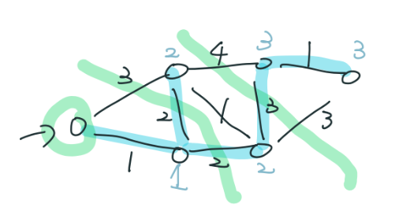
點上的權值代表走到該點最大邊權最小可以是多少
code
int Prim ( int s , int t ) {
vector < int > vis ( n );
priority_queue < pii , vector < pii > , greater < pii >> pq ;
pq . push ({ 0 , s });
int threshold = 0 ;
while ( pq . size ()) {
auto [ d , u ] = pq . top ();
pq . pop ();
threshold = max ( threshold , d );
if ( u == t ) break ;
if ( vis [ u ]) continue ;
vis [ u ] = true ;
for ( auto [ v , w ] : G [ u ]) {
pq . push ({ max ( w , threshold ), v });
}
}
return threshold ;
}
Prim 複雜度的瓶頸在於使用著資料結構（priority_queue）。若題目的邊權在 \(\approx 10^5\) 的時候，可以使用以下資料結構，可以壓到線性時間，適用於固定起點，固定終點
線性資料結構
struct DS {
vector < vector < node >> pq ;
int max_val = 0 , threshold = 0 ;
void init ( int _max_val ) {
max_val = _max_val ;
pq = vector < vector < node >> ( max_val + 1 );
}
void push ( pii x ) { // pair<dis, u>
pq [ max ( threshold , x . first )]. pb ( x );
}
pii get_value () {
while ( threshold <= max_val && pq [ threshold ]. size () == 0 ) threshold ++ ;
if ( threshold <= max_val && pq [ threshold ]. size () > 0 ) {
pii ret = pq [ threshold ]. back ();
pq [ threshold ]. pop_back ();
return ret ;
} else {
return { -1 , -1 };
}
}
} pq ;
int Prim ( int s , int t ) {
vector < int > vis ( n );
pq . init ( max_edge );
pq . push ({ 0 , s });
while ( pq . size ()) {
auto [ d , u ] = pq . get_value ();
if ( u == t ) break ;
if ( vis [ u ]) continue ;
vis [ u ] = true ;
for ( auto [ v , w ] : G [ u ]) {
pq . push ({ w , v });
}
}
return pq . threshold ;
}
下面是有應用到上面線性資料結構的題目
2023 TOI 一模 pD.安逸旅行路線 (jaunt) 見此處
因數
LOJ #6807. 「THUPC 2022 初赛」最小公倍树 給一張點從 \(L,\ldots ,R\) 編號的無向完全圖，\((u,v)\) 之間的邊權為 \(\text{lcm}(u,v)\) ，求最小生成樹權值
\(1\le L \le R \le 10^6,R-L\le 10^5\)
思路
用 Borovka 的角度下去思考，每個點先找最近的點連邊。可以觀察到對於一個點 \(b\) ，除非有一個點 \(a\) 跟 \(b\) 存在公因數，否則 \(b\) 直接去連 \(L\) 是最好的。我們可以將 \(\text{lcm}\) 寫成 :
\[\text{lcm}(a,b)=\frac{a\times b}{\gcd (a,b)}=\frac{a}{\gcd(a,b)}\times b\]
對於點 \(b\) ，因為 \(\gcd(a,b)\) 一定是 \(b\) 的因數，所以我們可以枚舉 \(b\) 的因數，對於每個因數選擇最小的 \(a\) 建邊。由於 \(b\) 的因數平均是 \(\log b\) 個，所以我們可以得到新圖 \(\text{edges}\) 數量為 \((R-L)\log R\)
code
#include <bits/stdc++.h>
#define int long long
#define pb push_back
#define ALL(x) x.begin(), x.end()
using namespace std ;
struct DSU {
vector < int > par , sz ;
DSU ( int n = 0 ) : par ( n ), sz ( n , 1 ) {
for ( int i = 0 ; i < n ; i ++ ) {
par [ i ] = i ;
}
}
int find ( int x ) {
if ( par [ x ] == x ) return x ;
return par [ x ] = find ( par [ x ]);
}
bool merge ( int u , int v ) {
u = find ( u ), v = find ( v );
if ( u == v ) return false ;
if ( sz [ u ] < sz [ v ]) swap ( u , v );
par [ v ] = u ;
sz [ u ] += sz [ v ];
return true ;
}
};
struct Edge {
int u , v , w ;
bool operator < ( const Edge & rhs ) const {
return w < rhs . w ;
}
};
int L , R ;
vector < Edge > edges ;
int Kruskal () {
DSU dsu ( R + 1 );
sort ( ALL ( edges ));
int ans = 0 ;
for ( auto [ u , v , w ] : edges ) {
if ( dsu . find ( u ) != dsu . find ( v )) {
dsu . merge ( u , v );
ans += w ;
}
}
return ans ;
}
void seive () {
vector < int > mn ( R + 1 );
for ( int i = 1 ; i <= R ; i ++ ) {
for ( int j = i ; j <= R ; j += i ) {
if ( j >= L ) {
mn [ i ] = j ;
break ;
}
}
}
for ( int i = 1 ; i <= R ; i ++ ) {
for ( int j = mn [ i ] + i ; j <= R ; j += i ) {
edges . pb ({ mn [ i ], j , mn [ i ] * j / i });
}
}
}
signed main () {
cin >> L >> R ;
seive ();
cout << Kruskal () << '\n' ;
}
2023 IOIC 207. NewWorld Online 給一張 \(n\) 個點的圖，點有權重 \(a_i\) ，兩點連邊的權重為 \(\gcd(a_i, a_j)\) ，問最大 MST
\(1 \le n \le 10^5, 1 \le a_i \le 10^6\)
思路
使用數論篩法技巧，每次將同一個因數的點 merge
關鍵字 : JZOJ5888 GCD生成树
code
#include <bits/stdc++.h>
#define int long long
using namespace std ;
const int N = 1e6 + 5 ;
int a [ N ], t [ N ], n ;
struct DSU {
vector < int > par , sz ;
DSU ( int n ) : par ( n + 1 ), sz ( n + 1 , 1 ) {
for ( int i = 1 ; i <= n ; i ++ ) {
par [ i ] = i ;
}
}
int find ( int x ) {
if ( par [ x ] == x ) return x ;
return par [ x ] = find ( par [ x ]);
}
bool merge ( int u , int v ) {
u = find ( u ), v = find ( v );
if ( u == v ) return false ;
if ( sz [ u ] < sz [ v ]) swap ( u , v );
par [ v ] = u ;
sz [ u ] += sz [ v ];
return true ;
}
};
signed main () {
cin >> n ;
int mx = 0 , ans = 0 ;
for ( int i = 1 ; i <= n ; i ++ ) {
cin >> a [ i ];
mx = max ( mx , a [ i ]);
if ( t [ a [ i ]] == 0 ) {
t [ a [ i ]] = i ;
} else {
ans += a [ i ];
}
}
DSU dsu ( mx );
for ( int i = mx ; i > 0 ; i -- ) {
int now = 0 ;
for ( int j = i ; j <= mx ; j += i ) {
if ( t [ j ] == 0 ) continue ;
if ( now == 0 ) {
now = j ;
continue ;
}
if ( dsu . merge ( now , j )) {
ans += i ;
}
}
}
cout << ans << '\n' ;
}
CF 1513 D. GCD and MST 有 \(n\) 個數，每個數代表一個點，點 \(i\) 和點 \(i+1\) 之間都有一條權值為 \(p\) 的邊，若區間 \([i,j]\) 的最小值等於它們的 \(\gcd\) ，\(i\) 和 \(j\) 之間連一條區間最小值的邊，求最小生成樹
\(n\le 2\times 10^5,p\le 10^9\)
思路
https://theriseofdavid.github.io/2020/04/27/Codeforces/Codeforces%201513D/
kruskal 過程想法
code
void solve () {
sort ( A . begin (), A . end ());
int sum = 0 , cnt = 0 ;
for ( int i = 0 ; i < n ; i ++ ) {
int x = A [ i ]. first , y = A [ i ]. second ;
if ( x >= m ) break ;
// 往左接, 盡量接, 一定要接起來
for ( int j = y - 1 ; j >= 0 && a [ j ] % x == 0 && ! vis [ j ]; j -- )
cnt ++ , sum += x , vis [ j ] = true ;
// 往右接, 但記得要留一格讓更右邊的集合有辦法來接我們
for ( int j = y + 1 ; j < n && a [ j ] % x == 0 && ! vis [ j - 1 ]; j ++ )
cnt ++ , sum += x , vis [ j - 1 ] = true ;
// 連 j 但因 j 是最外層所以不能 vis[j] = 1 證明如下
// 讓他最旁邊那格剛好沒有 vis
// vis[u] 定義 u 是否已經固定沒辦法再連邊了
// 若 v 再 u 左邊, 比較右邊的 w (如下圖)
// 
// v,u,..,w
// 若 w 想要連邊, 那他找 v 去連一定比 u 困難
// v 因為還需要多判斷一個 v 是否 % min == gcd, u 連的話則不用
// 所以要連的話一定是找目前集合 [l, r] 最右邊的, 不失一般性
}
sum += m * ( n - 1 - cnt );
cout << sum << " \n " ;
}
void init () {
memset ( vis , 0 , sizeof vis );
A . clear ();
cin >> n >> m ;
for ( int i = 0 ; i < n ; i ++ ) {
cin >> a [ i ];
A . pb ({ a [ i ], i });
}
}
Atcoder abc210 E. Ring MST 給一張 \(n\) 點無向圖，點編號 \(0,\ldots ,n - 1\) ，一開始沒有任何邊，有 \(m\) 種操作，每種操作都可做任意次 ：
給 \(a_i, c_i\) ，選任意一個點 \(x\) ，連接 \(x + a_i \pmod{n}\) 與 \(x\) ，花費 \(c_i\)
輸出最少讓圖連通的花費
\(n\le 10^9,m\le 10^5\)
思路
先將操作從 \(c_i\) 小到大排序
我們設加上前 \(i\) 種邊後，最佳解有 \(x_i\) 個連通塊。特別地，\(x_0=n\) ，如此一來，答案就是 :
\[\sum ^m_{i=1}c_i\cdot (x_{i-1}-x_{i})\]
\(u\) 能跟 \(v\) 能連通若且唯若存在整數 \(k_1,k_2,\ldots k_t\) 滿足
\[\begin{align} &u\equiv v+k_1\times a_1 + k_2\times a_2 +\ldots +k_t\times a_t\pmod{n} \\ & u\equiv v+ k_0 \times n+k_1\times a_1 + k_2\times a_2 +\ldots +k_t\times a_t \\ & u\equiv v + kd_t \\ & u\equiv v\pmod{d_t}\end{align}\]
其中 \(d_t=\gcd (n, a_1,\ldots ,a_t)\)
這時 mod 出來的數字只會是 \(0,1,\ldots, d_t - 1\) ，每個數字代表一個獨立的連通塊，故連通塊的數量為 \(d_t\)
code
#include <bits/stdc++.h>
using namespace std ;
const int maxn = 1e5 + 5 ;
int n , m ;
struct node {
int a , c ;
friend bool operator < ( const node & A , const node & B ) {
return A . c < B . c ;
}
} arr [ maxn ];
int main () {
cin >> n >> m ;
for ( int i = 1 ; i <= m ; i ++ ) {
cin >> arr [ i ]. a >> arr [ i ]. c ;
}
sort ( arr + 1 , arr + m + 1 );
long long ans = 0 ;
int x_i = n ;
for ( int i = 1 ; i <= m ; i ++ ) {
int last = x_i ;
x_i = __gcd ( x_i , arr [ i ]. a );
ans += 1l l * ( last - x_i ) * arr [ i ]. c ;
}
if ( x_i != 1 ) cout << -1 << " \n " ;
else cout << ans << " \n " ;
}
2024 TOI 模擬賽第三場 pA. 最⼩⽣成樹建構 構造一個 n 點 m 邊的圖，第 i 條邊權重為 i，滿足最小生成樹權值為 k。
\(n,m\le 2\times 10^5, k\le 2\times 10^{10}\)
思路
我們假設生成樹連接的恰好是 (1, 2), (2, 3), (3, 4), ...。最小的情況就是生成樹的權重 = 1, 2, 3, 4,...，若連這樣 k 都比他小那直接輸出無解，否則，我們就來考慮每條生成樹邊能讓他變得多大。令最小生成樹上權重第 i 大的邊權重 w[i]，我們思考它的上下界是多少：
至少還有 i - 1 條邊比這條邊大，所以 w[i] <= m - (i - 1)
w[i] 多大取決於比他小的邊的數量，又因為他是樹上權重第 i 大，代表比他小的邊是連接著一個 n - i 個點的圖，n - i 個點的圖最多只有 \(\binom{n - i}{2}\) 條邊，所以可以列出 w[i] - 1（n - i 個點的圖真正的邊的數量） <= binom(n - i, 2)（n - i 個點的圖最大的邊的數量）。如果還是不太懂可以看下面的圖片。
由於它是生成樹上權重第 i 小的邊，所以 w[i] >= n - i
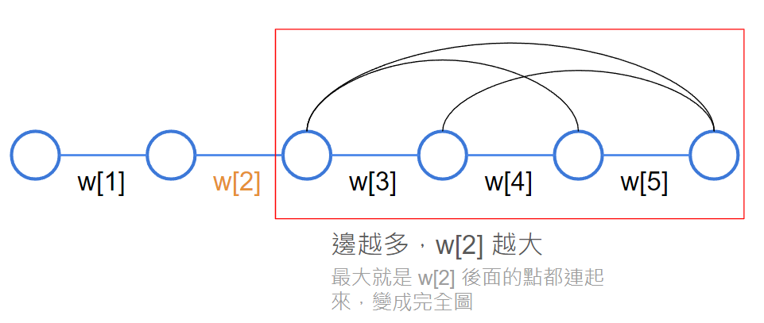
w[2] 能多大取決於紅色框起來的範圍內的邊的數量
所以我們有 n - i <= w[i] <= min{m + 1 - i, binom(n - i, 2) + 1}。我們知道了上下界後，就能去調整每個 w[i]，讓 sum(w[i]) = k。
可以先想最 general 的 case，也就是當 m = n - 1 時，我們假設生成樹連接的恰好是 (1, 2), (2, 3), (3, 4), ...，這樣比較方便思考。
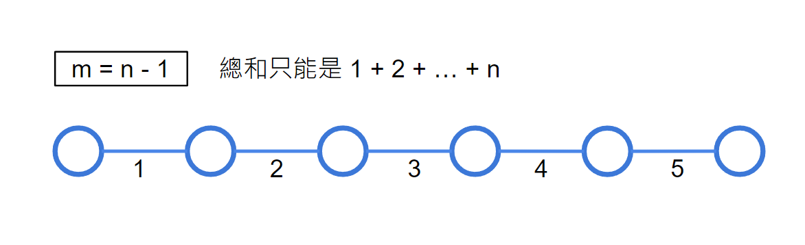
依照題目的意思，我們能得到的邊權總和也就只有 (1 + 2 + ... + n)，所以如果 k 小於這個數字那就是無解。我們繼續往 m = n, m = n + 1 的 case 思考
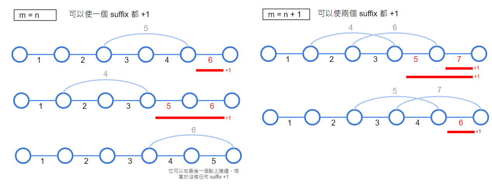
我們發現其實對於一條非 MST 的邊的連接，它可以讓右端的某能的 suffix +1。
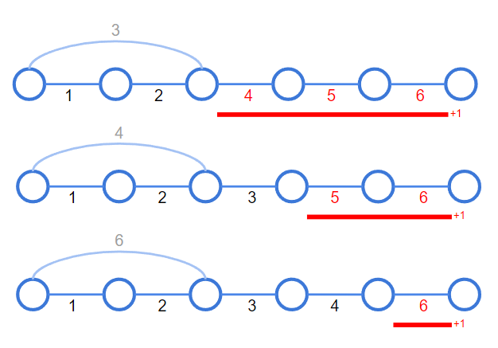
但這樣這題就算知道這些性質還是不好做。我們考慮讓 suffix 拆成一個又一個單獨的貢獻（例如 [1, 3] 都 +1 變成 [1, 1] +1, [2, 2] +1, [3, 3] + 1），這樣我們可以從後面開始，對於每一條邊，看有幾邊所促成的 suffix 可以讓當前這條邊 +1，由於越前面能給出貢獻的 suffix 會越來越少（前面能連的邊越來越少），自然對答案的貢獻也就沒辦法那麼大，所以我們會 greedy 的從後面的邊開始讓他 +1，能加就加。
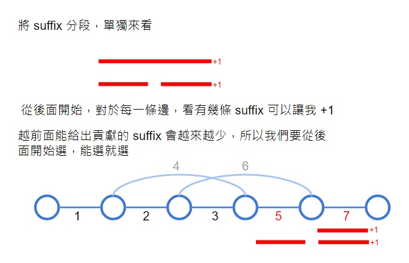
這邊是一個實際的例子：
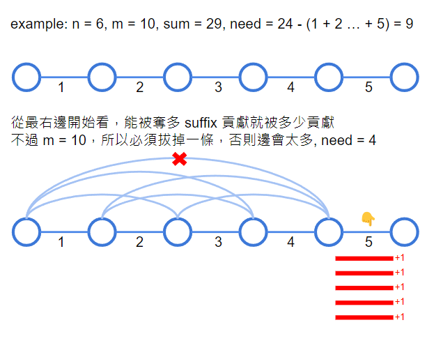
我們先考慮當前最右邊那條邊最多能加到多少，最好的情況就是前面都連邊，但我們會發現這樣我們總共的邊才 10 條，這邊就建了 11 條，太多，所以考慮拔掉一條（我們會拔掉右端點離我們越近的越好，但這其實不用實作，我們只要決定好每條 MST 上的邊權重應該要是多少即可，剩下的邊等等我們會說）。這樣我們的還需要的就是 need = 9 - 5 = 4。
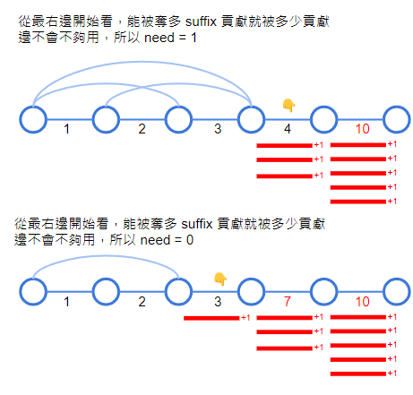
再來我們考慮右邊屬過來第二條邊，一樣看是否前面都連邊，發現是 ok 的，邊不會不夠用，所以我們 need = 4 - 3 = 1。同理，到右邊屬過來第三條邊時，need = 0，此時就配完了。如果配到最左邊的邊還發現 need 還有剩，那麼就是無解。
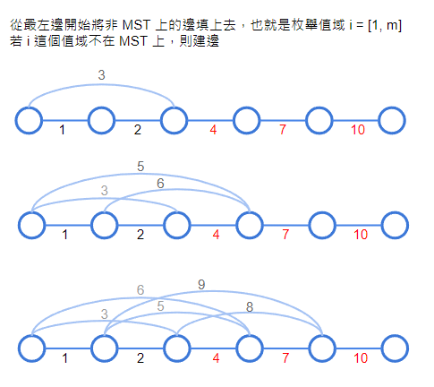
我們目前手上只有 MST 上的邊，並不知道非 MST 邊具體的情況是如何，所以我們這邊要來思考。因為 MST 的性質（權重越小的，連到越後面，會造成他先被 MST 選到），我們必須從最左邊開始連非 MST 的邊，我們枚舉值域 i = [1, m]，若 i 這個值域不在 MST 上，則建邊，建邊的方式一律是先枚舉右端點從左到右（因為右端點越小，能影響到的 suffix 越多），再枚舉左端點從右到左（也可以左到右，這個沒有限制）。
code
#include <bits/stdc++.h>
#define int long long
using namespace std ;
int C2 ( int n ) {
return n * ( n - 1 ) / 2 ;
}
struct Edge {
int x , y ;
};
signed main () {
cin . tie ( 0 );
ios_base :: sync_with_stdio ( false );
int n , m , ans ;
cin >> n >> m >> ans ;
int base = C2 ( n );
// 最小的情況是 n - 1 條邊(tree 的 case)
if ( ans < base ) {
// 若連最小的情況都答不到則無解
cout << "-1 \n " ;
return ;
}
int need = ans - base ; // 還需要多少
vector < Edge > e ( m + 1 );
// 連好所有生成樹的邊
for ( int i = 1 ; i < n ; i ++ ) {
int upper_bound = min ( m + 1l l - i , C2 ( n - i ) + 1l l );
int now = n - i ;
// inc: 這條邊可以貢獻多少到答案
int inc = min ( need , ( int ) upper_bound - now );
need -= inc ;
e [ now + inc ] = { i , i + 1 };
}
if ( need > 0 ) {
cout << "-1 \n " ;
return ;
}
// 連好生成樹以外的邊
// 至少相隔 2，不然會有重邊
int l = n - 2 , r = n ;
for ( int i = 1 ; i <= m ; i ++ ) {
if ( ! e [ i ]. x ) {
e [ i ] = { l , r };
// 大到小枚舉 l, r 從 l 開始往右枚舉
if ( r < n ) {
r ++ ;
} else {
l -- ;
r = l + 2 ;
}
}
cout << e [ i ]. x << ' ' << e [ i ]. y << '\n' ;
}
}